| 日付 | 2017年6月11日（日） |
|---|---|
| 山域 | 浅間周辺 |
| メンバー | 家族（妻、長女・6歳、長男・4歳） |
| 山行形態 | 子連れ日帰り |
| アクセス | 車 |
| ルート (Map) | 高峰温泉 (9:17) - (10:20) 水ノ塔山 - (11:23) 篭ノ登山 (12:24) - (14:11) 高峰温泉 |
梅雨入り宣言があったが全く雨が降らない。
週末は快晴予報なので、梅雨前の最後の山として
少し遠出して篭ノ登山に行くことにする。
娘が産まれて2回目に行った山で、6年振りの再訪となる。
今回は前回歩けなかった水ノ塔山経由で登ってみることにする。
高峰温泉前の駐車場に車を停める。標高1940m。
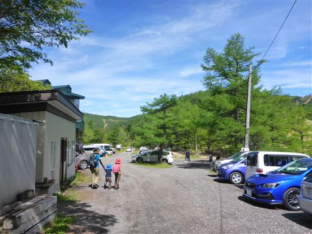
高峰温泉。ランプの宿と書かれているが、電気が来ているように見える。
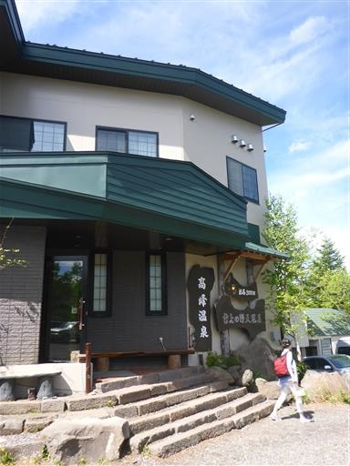
登山口から登山道に入っていく。歩き始めから美しい樹林帯が広がる。
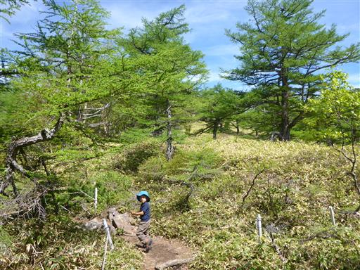
振り返ると背後の黒斑山が見える。この山もいつか再訪したいが、もう少し先になりそうだ。

足下にはイワカガミの花が咲いている。この花を見るのは久々だ。
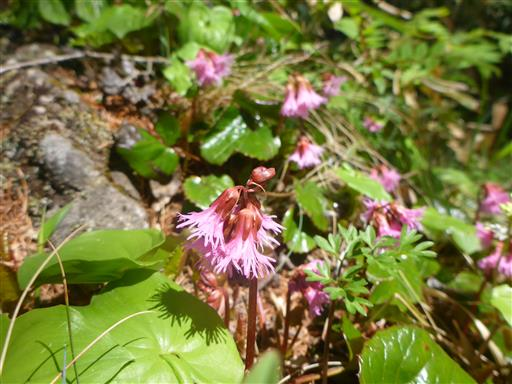
カラマツの新緑が美しい。この辺りはまだ春だ。
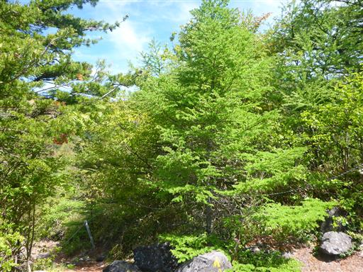
明るく開けた場所に出てくる。左に見えるのが目指す篭ノ登山の山頂だ。
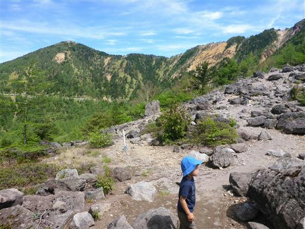
息子はいつも最初だけ元気で、どんどん先に歩いていく。
少し遅れて娘が歩いてくる。

あちらこちらにツガザクラの花が咲いている。こちらの花を見るのも久々だ。
さすがに標高の高い山だけあって、様々な高山植物が見られる。
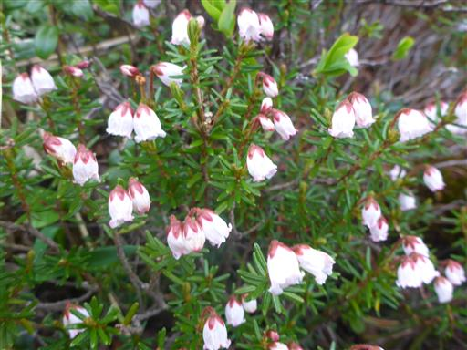
登山道には大きな岩が転がっている。
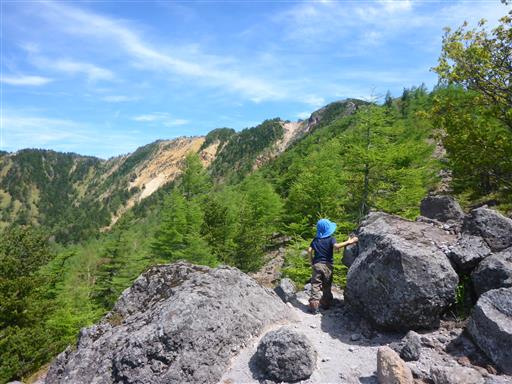
巨大な岩に突き当たる。左右どちらを行っても良いが左を選択。
ちなみに右は遠回りになるようだ。
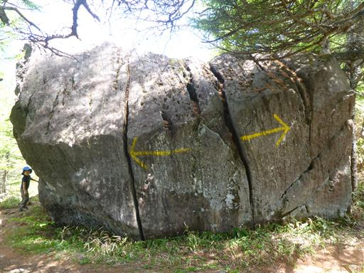
展望の良い道が続く。
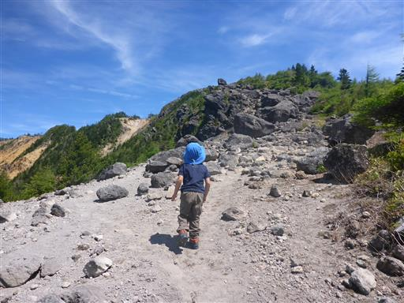
山と山の間から白い山が見える。北アルプスの槍ヶ岳だ。
今日は非常に空気が澄んでいて、最高の登山日和だ。
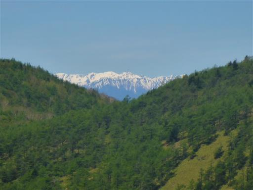
高山だけあって少々険しい道も出てくる。息子は手を使って一生懸命登っている。
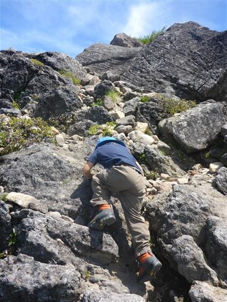
歩いてきた道を振り返る。左に見える駐車場からここまで登ってきた。
右に見える山は高峯山だ。
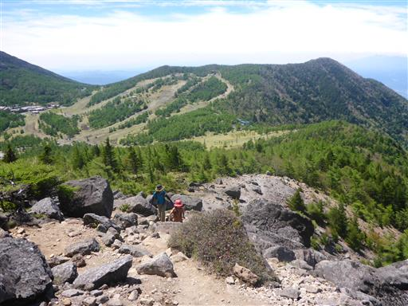
巨大な岩の脇をすり抜ける。大人は頭をぶつけないよう注意だ。
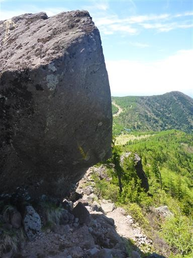
巨岩が転がる登山道が続く。
アスレチックのようで楽しい登りだ。
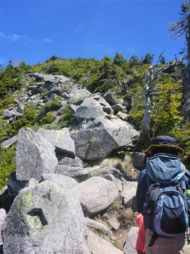
遠くに八ヶ岳が見える。ここから見る八ヶ岳はあまり迫力がない。
南の方は少々霞んでいて、残念ながら今日は富士山が見えない。

岩だらけの斜面を登り切って水ノ塔山の山頂に到着する。標高2202m。
ここまで来ると、もうあまり登りはない。
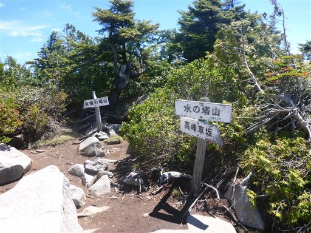
山頂からの展望。見えているのは東篭ノ登山と西篭ノ登山。
遠くに見えるのは北アルプスだ。
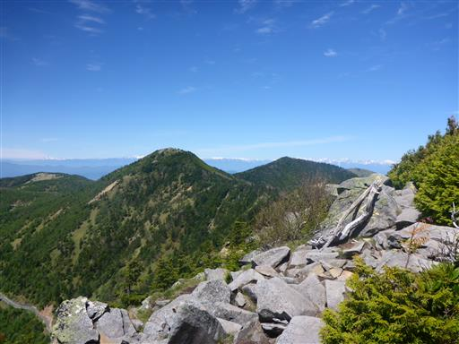
北アルプスのズーム写真。鹿島槍ヶ岳～五竜岳～白馬岳。
篭ノ登山の山頂からの景色が楽しみだ。
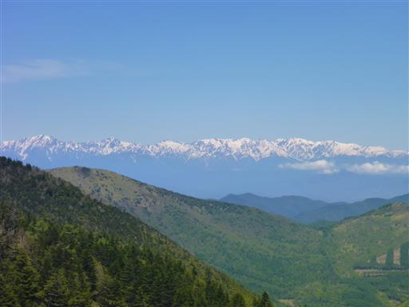
水ノ塔山から先も巨岩が転がる登山道が続く。
ここから先はアップダウンが連続する尾根道だ。
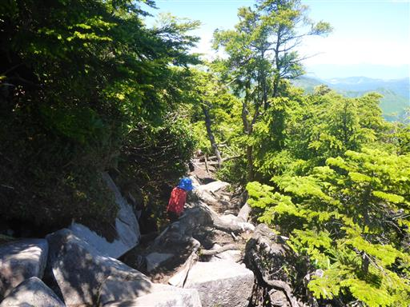
岩と岩の隙間には、あちらこちらに穴が開いている。
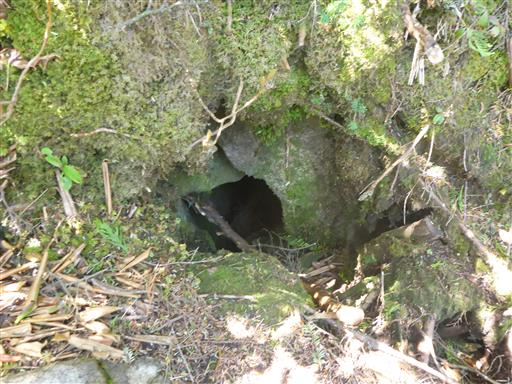
水ノ塔山を過ぎると初めて北側の展望が広がる。
一際目立つのは美しい三角形の四阿山。

こちらは草津方面の山々。この辺りの山は名峰揃いなのだが
遠くから見るとどれもこれも平易な山容で、特徴がつかみにくい。
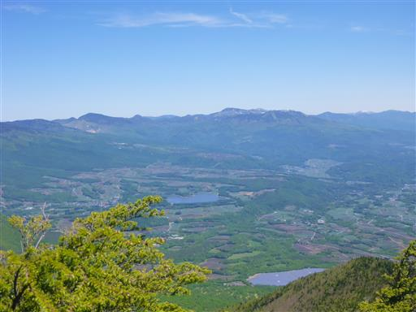
登りがあれば下りあり。樹林帯の中に入っていく。
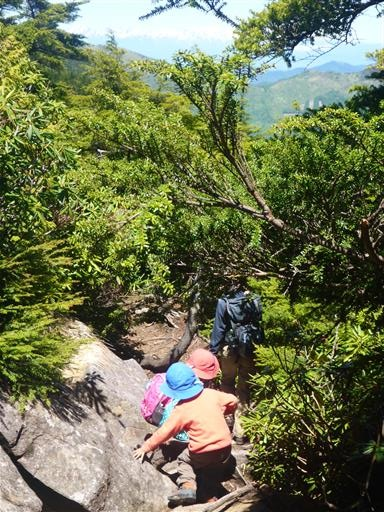
登山道にシャクナゲがたくさん咲いている。
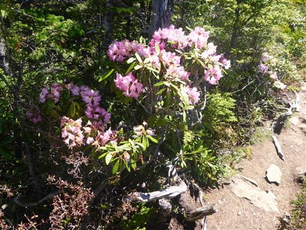
再び展望が広がる場所に出てくる。目指す山頂がだいぶ近づいてきた。
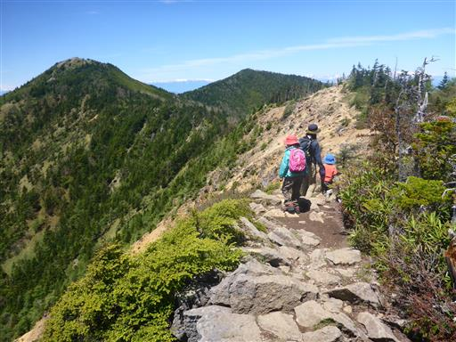
赤ゾレと呼ばれる場所に到着。ここからしばらくザレ場が続く。
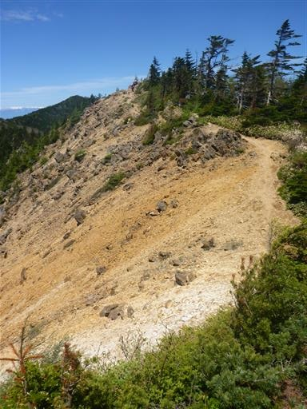
ザレははるか下の方まで続いている。
傾斜は緩めだが、滑り落ちると危険なため慎重に通過する。
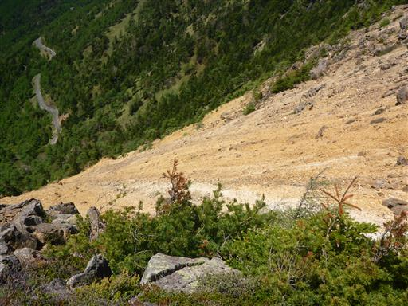
途中で娘が足を捻ってしまう。
しばらく娘をおんぶして樹林帯の中を歩くが、それを見た息子が大激怒。
幸い娘はしばらくしたら歩けるようになり、それを見た息子もようやく落ち着いた。
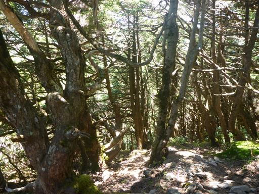
少々ハプニングがあったが、無事篭ノ登山の山頂に到着する。標高2227m。
背後に見えるのは黒斑山と浅間山の頭だ。
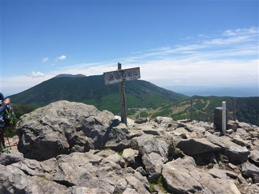
山頂に着くとまず目に飛びこんでくるのは一列に並ぶ白い北アルプス。
見えているのは後立山連峰の山々だ。
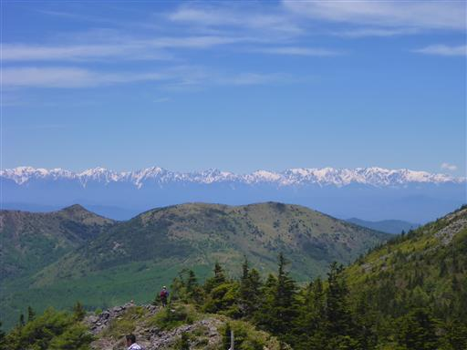
穂高岳～槍ヶ岳。北アルプスの東側の山々が全て見えている。
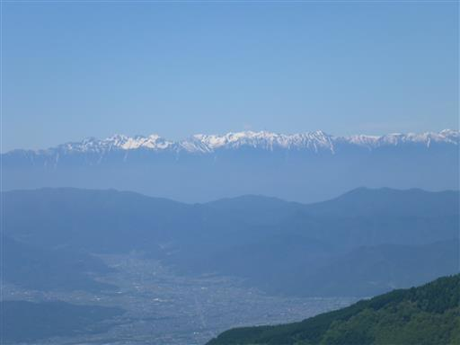
こちらは妙高山を中心とする頚城の山々。
北アルプスほどではないが標高2400mを超える豪雪地帯の山で、まだ真っ白だ。
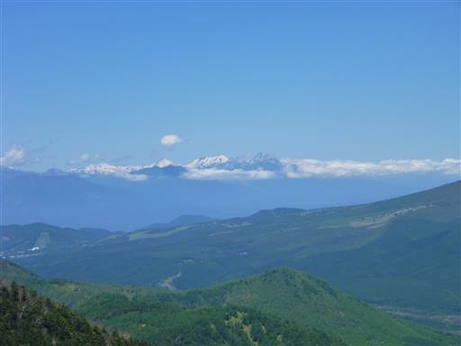
歩いてきた稜線を振り返る。赤ゾレが良く目立っている。
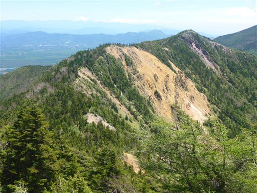
大小の石が転がる山頂は比較的広く、その一角に腰を下ろして昼食をとる。
暑い山を避けてこの地に来たのだが、気温が低く寒いくらいだ。
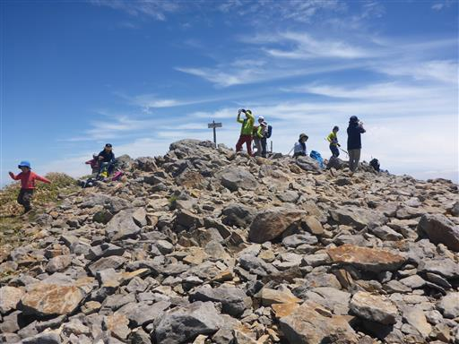
最短コースの池ノ平湿原に下山して一人車を取りに行く手も考えたが、
娘は足の状態が問題なさそうなので、元来た道を下山する。
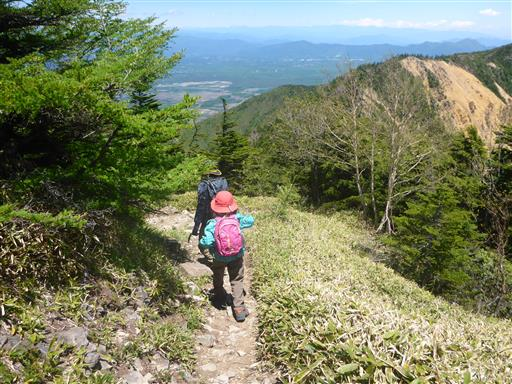
シャクナゲ地帯を通り過ぎる。
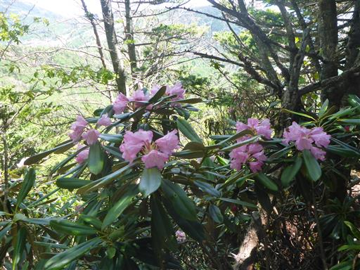
登りの時は聞こえなかったハルゼミの声が聞こえる。
時間帯が異なるからだろうか？心地よい音だ。
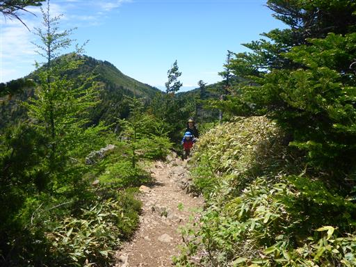
無事、高峰温泉まで下ってくる。
登山道、展望とも素晴らしい山で、久々に高山の雰囲気を楽しめた山行だった。
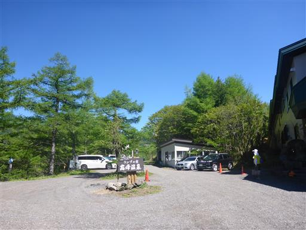